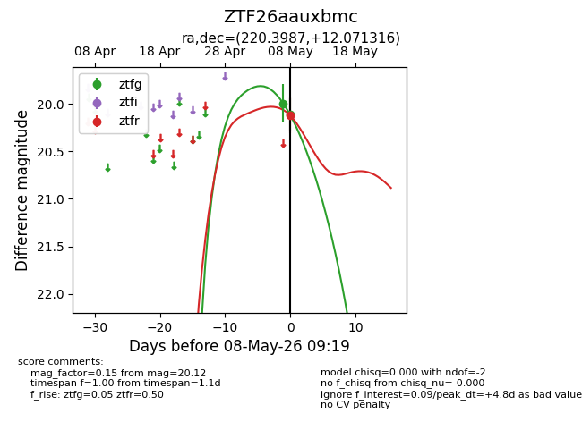
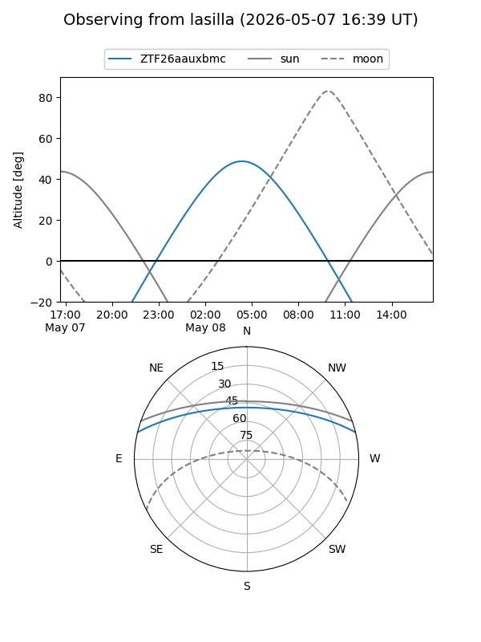
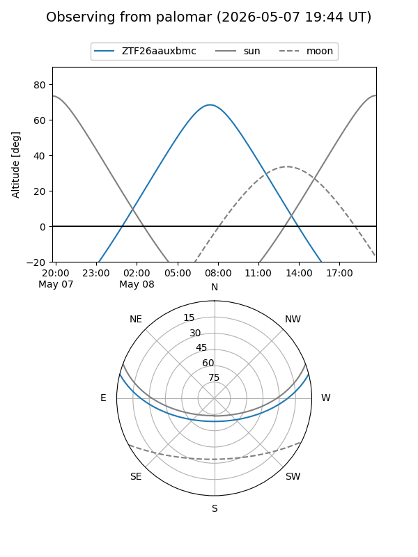
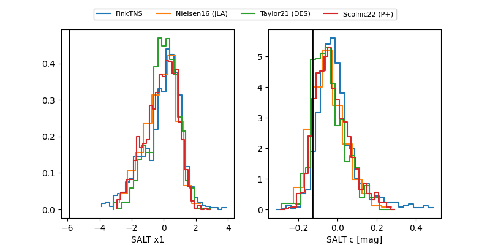

ZTF26aauxbmc
Target ZTF26aauxbmc at 2026-05-08 09:20
Aliases and brokers:
FINK: link
Lasair: link
ALeRCE: link
alt names
ZTF26aauxbmc (ztf,fink_ztf)
Coordinates:
equatorial (ra, dec) = 220.3987,+12.07132
equatorial (HMS+DMS) = 14:41:35.69,+12:04:16.74
galactic (l, b) = (8.0963,+60.11846)
Flags:
Photometry:
last ztfg=20.11, ztfr=20.12
2 ztfg, 1 ztfr detections
Lightcurve

Visibility


Additional plots
